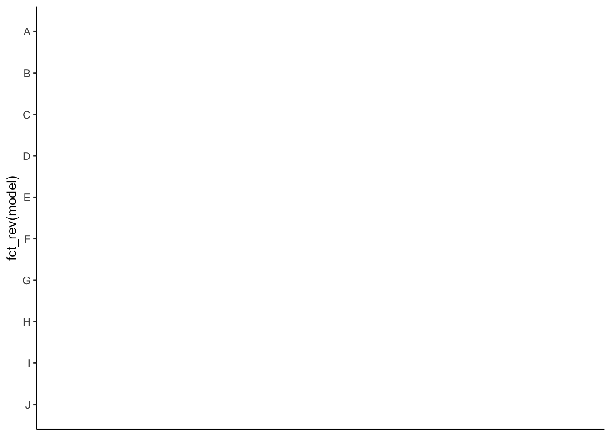
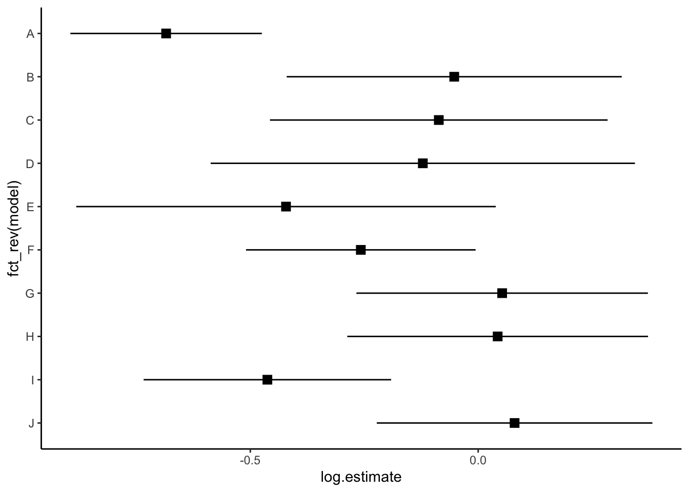
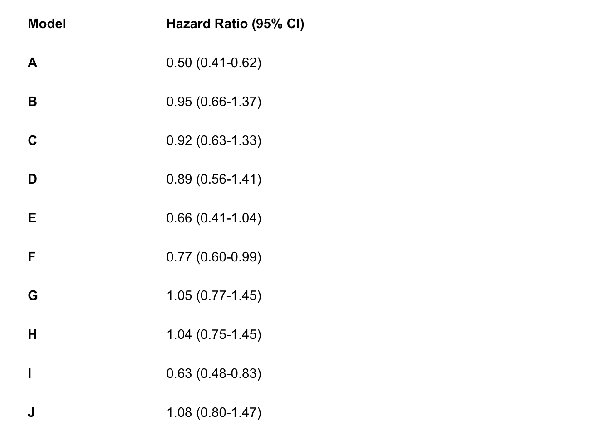
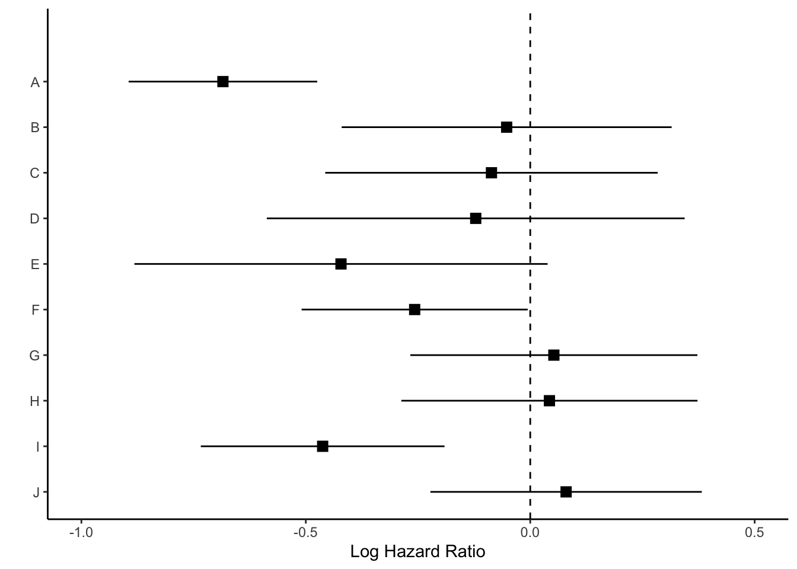
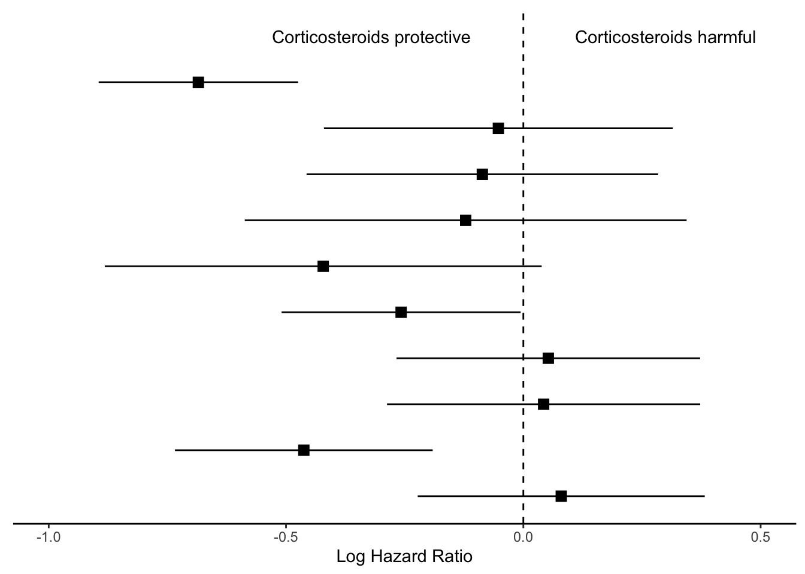
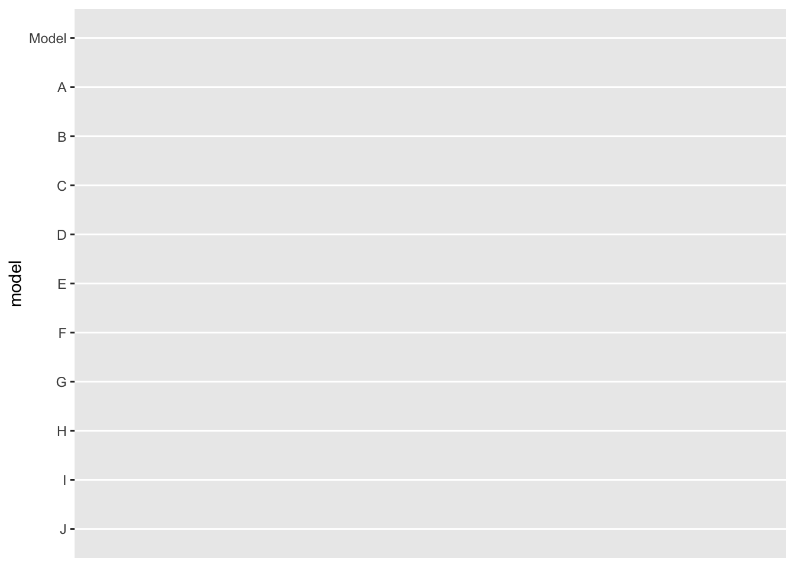
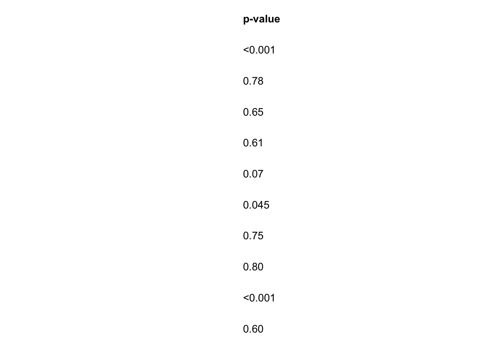
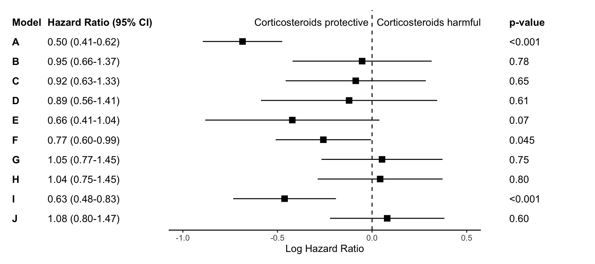

This post contains a short R code walkthrough to make annotated forest plots like the one shown above. There are packages to make plots like these such as forester, forestplot, and ggforestplot, but sometimes I still prefer to make my own.
The big picture of this is that we’ll be making three separate ggplot2 objects and putting them together with patchwork. You could also use packages like cowplot, gridarrange or ggarrange to put the intermediate plot objects together. You can skip to the end to see the full code.
Step 0: Load libraries and data
First we will load the necessary libraries and the data set. The data we’ll use for this plot are the effect estimates for 10 Cox regression models. The models, titled A-J, are stored in data sets called res and res_log, stored as csvs on my Github. We’ll combine these data and then begin plotting.
Step 1: Make point and line range section of the plot
We will first work on making the standard “forest plot”, or the middle section of the figure. This section uses points and lines to indicate the estimate and 95% confidence interval around the estimate.
In my experience, journal editors sometimes ask for these estimates to look a certain way during the revision process. For this graph, the journal editor told me that it was “journal standard to plot relative measures (ratio data), such as ORs, on log scales to preserve the correct spatial relationship between values.” So, I’m going to be visually showing the log hazard ratio, and annotating later with the hazard ratio.
Let’s look at how we can plot the log hazard ratio estimates. We first want the models to show in alphabetical order from the top to the bottom of the graph.
p <- res |>ggplot(aes(y =fct_rev(model))) +theme_classic()p

Then we show all of our information (point estimate and 95% confidence interval) on the graph.
p <- p +geom_point(aes(x=log.estimate), shape=15, size=3) +geom_linerange(aes(xmin=log.conf.low, xmax=log.conf.high)) p

We can now add a vertical line at 0 with geom_vline and rename the x axis.
p <- p +geom_vline(xintercept =0, linetype="dashed") +labs(x="Log Hazard Ratio", y="")p

Next we’ll use coord_cartesian() which will allow us to zoom to the exact height and width we want. I want to zoom out a bit to leave myself room for the text “Corticosteroids protective” vs. “Corticosteroids harmful” so I’m going to set my limits to y=c(1,11). Each of the models (10 in total) is one unit, so this will give me one extra unit of space at the top of the plot. The x-limit I played around with a bit based upon the range of my log hazard ratios, and I ultimately arrived at xlim=c(-1, .5).
p <- p +coord_cartesian(ylim=c(1,11), xlim=c(-1, .5))p

Now we have space to add our text about protective vs. harmful using the annotate layer.
p <- p +annotate("text", x =-.32, y =11, label ="Corticosteroids protective") +annotate("text", x = .3, y =11, label ="Corticosteroids harmful")p
Finally, we will remove everything on the y axis, because this plot is going to align with the next plot we make, showing the hazard ratios.
p_mid <- p +theme(axis.line.y =element_blank(),axis.ticks.y=element_blank(),axis.text.y=element_blank(),axis.title.y=element_blank())p_mid

We’ll save this ggplot object as p_mid and move on to the next section of the figure.
Step 2: Create estimate annotations plot
To plot the hazard ratio estimates, we first need to modify the data set a bit. We’ll start by rounding our estimates to the significant figures the journal requires. For this figure, I need two decimal places. I’ll round the numbers to two decimal places (except for p-values that are < 0.01), and then “pad” the numbers as strings so that they take up 4 characters. In other words, we will turn a p-value that reads 0.2 into 0.20, which has four characters (three numbers and a decimal point).
I’ll also paste the low and high confidence intervals for my hazard ratio estimates together with a hyphen, and call this variable estimate_lab.
Finally, I’ll bind a row of data that shows what I want the column names of my annotations to read as (e.g. Model, Hazard Ratio). The real column names of this data frame won’t appear on my plot, but the data in the rows themselves will. This should become clearer as we create the annotation sections of the plots.
# wrangle results into pre-plotting table formres_plot <- res |># round estimates and 95% CIs to 2 decimal places for journal specificationsmutate(across(c(estimate, conf.low, conf.high),~str_pad(round(.x, 2),width =4,pad ="0",side ="right" ) ),# add an "-" between HR estimate confidence intervalsestimate_lab =paste0(estimate, " (", conf.low, "-", conf.high, ")")) |># round p-values to two decimal places, except in cases where p < .001mutate(p.value =case_when( p.value < .001~"<0.001",round(p.value, 2) == .05~as.character(round(p.value,3)), p.value < .01~str_pad( # if less than .01, go one more decimal placeas.character(round(p.value, 3)),width =4,pad ="0",side ="right" ),TRUE~str_pad( # otherwise just round to 2 decimal places and pad string so that .2 reads as 0.20as.character(round(p.value, 2)),width =4,pad ="0",side ="right" ) )) |># add a row of data that are actually column names which will be shown on the plot in the next stepbind_rows(data.frame(model ="Model",estimate_lab ="Hazard Ratio (95% CI)",conf.low ="",conf.high ="",p.value ="p-value" ) ) |>mutate(model =fct_rev(fct_relevel(model, "Model")))glimpse(res_plot)
To create the hazard ratio annotations, we’ll first organize the model order on the y axis.
p_left <- res_plot |>ggplot(aes(y = model))p_left

Next, we will add the model as text (instead of as a label on the y axis) using geom_text. We can specify where we want the text to show up by specifying the x axis should be 0. We will also set the hjust (horizontal justification) to 0 and fontface to bold type.
We can use the same idea to add the hazard ratios and their confidence intervals, however, we want to specify that the hazard ratio data (estimate_lab variable) should only be bold if the value is equal to the title. We will do this using an ifelse statement within the fontface argument.
Finally, we can remove the background and edit the sizing so that this left size of the plot will match up neatly with the middle and right sides of the plot. Remember, coord_cartesian allows the user to zoom in and out of the plot without removing data.
That’s it for the hazard ratio annotation section of the plot! Next we can create the p-value annotation of the plot.
Step 3: Create p-value annotations
We will follow the same steps as in Step 2 to create the p-value annotations. Again, we use an ifelse statement to specify that only the word p-value should be bolded, rather than all the p-values.
# right side of plot - pvaluesp_right <- res_plot |>ggplot() +geom_text(aes(x =0, y = model, label = p.value),hjust =0,fontface =ifelse(res_plot$p.value =="p-value", "bold", "plain") ) +theme_void() p_right

Step 4: Put the three plots together with patchwork
Finally, we will use the package patchwork to merge all three plots together. You could equivalently use gridarrange, cowplot, or some other ggplot2 figure-merging package of your choice.
For this specific use of patchwork you need to specify the top, left, right, and bottom indices of each plot in an areas function, and then put these together in a vector, which I call layout. Then, you can specify that layout in the design argument of plot_layout.
To learn about the syntax of patchwork and its plot_layout function check out this article.
layout <-c(area(t =0, l =0, b =30, r =3), # left plot, starts at the top of the page (0) and goes 30 units down and 3 units to the rightarea(t =1, l =4, b =30, r =9), # middle plot starts a little lower (t=1) because there's no title. starts 1 unit right of the left plot (l=4, whereas left plot is r=3), goes to the bottom of the page (30 units), and 6 units further over from the left plot (r=9 whereas left plot is r=3)area(t =0, l =9, b =30, r =11) # right most plot starts at top of page, begins where middle plot ends (l=9, and middle plot is r=9), goes to bottom of page (b=30), and extends two units wide (r=11))# final plot arrangementp_left + p_mid + p_right +plot_layout(design = layout)

Step 5: Export your plot!
I typically export as an encapsulated postscript (eps) file using ggsave for journals, but you could instead export as a jpg, png, etc.
ggsave("forest-plot.eps", width=9, height=4)
Hopefully that’s not too hard to follow! Please feel free to email me if you find any errors or confusing parts. Here’s the full code:
Just the code
## load up the packages we will need: library(tidyverse)library(gt)library(patchwork)## ---------------------------## load data# load in results generated from Cox PH hazards modelsres_log <-read_csv("model-first-results-log.csv")res <-read_csv("model-first-results.csv")res <- res_log |>rename_with(~str_c("log.", .), estimate:conf.high) |>select(-p.value) |>full_join(res)## plotting## ---------------------------# create forest plot on log scale (middle section of figure)p_mid <- res |>ggplot(aes(y =fct_rev(model))) +theme_classic() +geom_point(aes(x=log.estimate), shape=15, size=3) +geom_linerange(aes(xmin=log.conf.low, xmax=log.conf.high)) +labs(x="Log Hazard Ratio") +coord_cartesian(ylim=c(1,11), xlim=c(-1, .5))+geom_vline(xintercept =0, linetype="dashed") +annotate("text", x =-.32, y =11, label ="Corticosteroids protective") +annotate("text", x = .3, y =11, label ="Corticosteroids harmful") +theme(axis.line.y =element_blank(),axis.ticks.y=element_blank(),axis.text.y=element_blank(),axis.title.y=element_blank())# wrangle results into pre-plotting table formres_plot <- res |>mutate(across(c(estimate, conf.low, conf.high), ~str_pad(round(.x, 2), width=4, pad="0", side="right")),estimate_lab =paste0(estimate, " (", conf.low, "-", conf.high,")"),color =rep(c("gray","white"),5)) |>mutate(p.value =case_when(p.value < .01~"<0.01", TRUE~str_pad(as.character(round(p.value, 2)),width=4,pad="0",side="right"))) |>bind_rows(data.frame(model ="Model", estimate_lab ="Hazard Ratio (95% CI)", conf.low ="", conf.high="",p.value="p-value")) |>mutate(model =fct_rev(fct_relevel(model, "Model")))# left side of plot - hazard ratiosp_left <- res_plot |>ggplot(aes(y = model)) +geom_text(aes(x=0, label=model), hjust=0, fontface ="bold") +geom_text(aes(x=1, label=estimate_lab), hjust=0, fontface =ifelse(res_plot$estimate_lab =="Hazard Ratio (95% CI)", "bold", "plain")) +theme_void() +coord_cartesian(xlim=c(0,4))# right side of plot - pvaluesp_right <- res_plot |>ggplot() +geom_text(aes(x=0, y=model, label=p.value), hjust=0, fontface =ifelse(res_plot$p.value =="p-value", "bold", "plain")) +theme_void() # layout design (top, left, bottom, right)layout <-c(area(t =0, l =0, b =30, r =3),area(t =1, l =4, b =30, r =9),area(t =0, l =9, b =30, r =11))# final plot arrangementp_left + p_mid + p_right +plot_layout(design = layout)## save final figure#ggsave("forest-plot.eps", width=9, height=4)